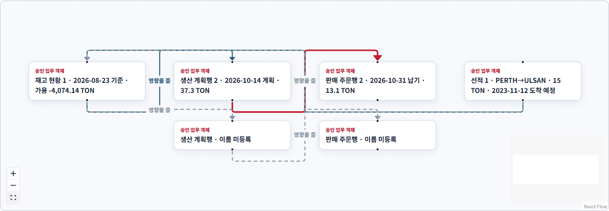

현업의 실행
Power User가 업무 SW·보고서·시뮬레이터를 직접 구체화하고 AI 에이전트가 제작·검증을 지원합니다.
BUSINESS MODEL & GROUP EXPANSION ROADMAP · v0.6
LAXS는 LS 그룹 내부 시스템 명칭입니다. LAXS-M은 MnM 적용판으로서 현업 SW 생성, 기업 데이터·온톨로지, 시뮬레이션, 결정·발간을 하나의 운영체계로 검증하고 반복 가능한 그룹 확산 단위를 만듭니다.
01 / 0901 · Product Thesis
각 조직의 앱·데이터·지식·의사결정이 공통 계약과 권한 안에서 축적될수록 모델과 공급자가 바뀌어도 회사의 지식과 실행 역량은 남습니다.
Power User가 업무 SW·보고서·시뮬레이터를 직접 구체화하고 AI 에이전트가 제작·검증을 지원합니다.
조직·권한·업무키트·MDM·온톨로지·외부지표를 같은 경영 언어로 연결합니다.
같은 기준선에서 계산한 결과를 검토·회의·결정·실행·효과 측정으로 이어갑니다.
02 · Replicable Product Unit
법인마다 전부 새로 개발하지 않습니다. 공통 Host와 통제를 유지하고, 회사별 조직·업무키트·관계·산식·화면 구성만 승인된 확장으로 관리합니다.
FOUNDATION 포함 구매·물류·재고·생산·판매·재무
미배선은 명시적 차단·안내
실제 관계 그래프 시연
DEMO/SYNTHETIC 기준선
03 · Operating Model
중앙이 모든 업무를 대신 구현하지 않고, 법인이 데이터와 업무 결정을 소유하되 제품 코어·계약·보안·릴리스는 공통 기준으로 운영합니다.
| 역할 | 소유 책임 | 하지 않는 일 | 성과 기준 |
|---|---|---|---|
| Group AX Product Office | 제품 코어·표준 계약·로드맵·품질·비용 | 법인 업무결정 대행 | 재사용률·릴리스 안정성·그룹 비용 |
| 법인 Product Cell | 회사 프로필·현업 앱·채택·효과 | 공통 코어 포크 | 실행 환류 완주·사용률·KPI |
| Data Owner | 원천·대사·소유권·공식 실적 | AI에게 승인 위임 | 품질·신선도·대사율 |
| ITO/운영 파트너 | 인프라·연계·SLA·L1/L2 운영 | 제품 기준 무단 변경 | 가용성·복구·운영비 |
| 현업 Power User | 요구·검증·앱·시나리오·피드백 | 내부 ID·코드 수작업 관리 | 업무시간·오류·반복 사용 |
04 · Expansion Waves
다음 단계로 이동할 때마다 재현성·보안·효과·운영비 Gate를 다시 통과합니다.
| Wave | 범위 | 핵심 산출물 | Gate |
|---|---|---|---|
| W0 · Local Proof | LAXS-M 로컬 브라우저 종단 검증 | 실제 화면·인증판·관계·계산·보고 | 한 사용자 종단·운영 데이터 무오염 |
| W1 · MnM Pilot | 최대 10명·대표 업무 1개 | 현장 KPI·교육·운영·복구 증거 | 재현·권한·사용률·효과 기준 |
| W2 · MnM Scale | 평시 30명·최대 50명 | PostgreSQL·모니터링·SLA | 응답·동시성·복구·비용 |
| W3 · Second Company | 그룹 타 법인 1개 | 회사 프로필·업무키트 재사용 | 코어 포크 없이 적용 |
| W4 · Group Standard | 복수 법인·공통 카탈로그 | 그룹 운영규정·표준계약·지원체계 | 법인 경계·책임·비용 합의 |
효과 미측정, 범위 오류, 복구 미실증, 운영 책임 미정이면 확대하지 않습니다.
공통 코어·계약은 유지하고 회사별 업무키트·표시 구성을 분리합니다.
두 번째 법인에서 코어 포크 없이 실행 환류를 완주하면 반복 제품성을 인정합니다.
05 · Internal Economic Model
그룹 내부 확산 단계에서는 회계·조달 기준에 맞춰 공통 제품비, 법인별 구축비, 사용량 기반 AI·인프라비를 분리해 의사결정합니다.
| 관리 단위 | 측정 방식 | 통제 |
|---|---|---|
| 승인 산출물 1건당 AI 비용 | 모델·토큰·재시도·검증비 합산 | 난이도별 모델·캐시·비용 상한 |
| 업무키트 1종 적용비 | 원천·대사·품질·교육 공수 | 재사용 자산과 회사별 차이 분리 |
| 사용자 1명당 운영비 | 인프라·지원·AI 사용량 | 10명·50명 단계별 용량 계획 |
06 · Value Proof
효과는 업무 생산성, 경영 품질, 데이터·통제, 확산 경제성의 네 축으로 검증합니다.
자료 취합·대사·보고·회의 준비시간과 재작업 감소
계획 오차·편향·결정 리드타임·조건 이행률 개선
인증판·관계·산식·권한·발간 근거 추적률
두 번째 적용부터 업무키트·어댑터·UI 재사용률


07 · Risk & Governance
빠른 확산보다 실패했을 때 멈추고 되돌릴 수 있는 구조를 먼저 확보합니다.
LAXS는 LS 그룹 내부 명칭입니다. 외부 사업화는 별도 브랜드와 회사 승인 없이는 진행하지 않습니다.
법인·조직 범위, DEMO/REAL 구분, 외부 LLM 최소 문맥, 대외 발간 게이트를 강제합니다. 상세 설명은 AI 신뢰 Q&A v0.6를 참조합니다.
계산 모델은 승인 사건·버전·단위·부호·경계 조건을 갖추고 LLM과 분리합니다.
백업·복구·마이그레이션·롤백·감사 원장 보존을 단계별로 실증합니다.
제품 코어, 법인 설정, 데이터 승인, 인프라 운영, 현업 결정의 책임자를 구분합니다.
범위 오류·재현 실패·효과 미달·비용 초과 시 확산을 멈추고 원인과 보완비용을 보고합니다.
EXECUTIVE DECISION
지금 필요한 결정은 대규모 전사 도입이 아닙니다. 10명 이내 MnM 파일럿의 Sponsor·업무 범위·데이터 오너·KPI·비용 상한을 확정하고, 효과와 운영 증거를 통과한 뒤 30~50명과 두 번째 법인으로 확장하는 것입니다.
MnM 대표 실행 환류와 90일 파일럿 Charter
소수정예 Product Cell·Data Owner·Power User
효과·보안·복구 Gate와 다음 단계 투자 원칙